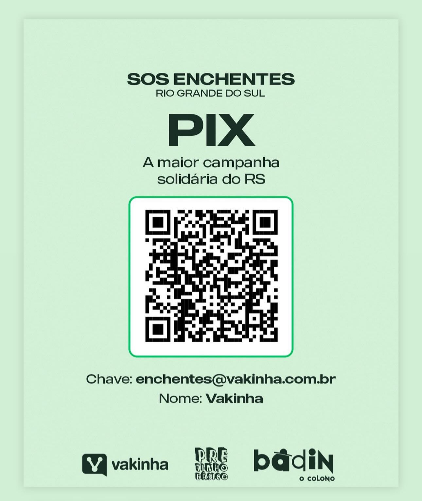

Nossa abordagem é simples, porém eficaz: através de uma conta para doações generosamente fornecida pela GrafenoTweaking, buscamos arrecadar recursos financeiros para ajudar indivíduos e comunidades em dificuldades. E o melhor de tudo é que cada doação é acompanhada de perto, garantindo que chegue às mãos certas no momento certo.
Quando atingimos nossas metas de doações, celebramos não apenas o alcance de um objetivo, mas também o impacto real que estamos causando na vida das pessoas. Publicamos detalhes sobre cada doação realizada, desde o valor até a pessoa beneficiada, aqui em nosso site, para que todos possam ver o progresso que estamos fazendo juntos.
O coração deste projeto é a ideia de que, juntos, podemos fazer muito mais do que poderíamos individualmente. Cada contribuição, por menor que pareça, tem o poder de transformar vidas e espalhar esperança onde ela é mais necessária. Estamos comprometidos em continuar esse trabalho, guiados pela convicção de que é nosso dever ajudar aqueles que enfrentam dificuldades.
Junte-se a nós nesta jornada de compaixão e solidariedade. Sua participação faz toda a diferença. Juntos, podemos verdadeiramente mudar o mundo, um ato de bondade de cada vez.
Neste momento de dificuldade, estendemos nossas mãos aos nossos amigos no Rio Grande do Sul, que enfrentam as devastadoras consequências das enchentes. As águas tumultuosas não apenas inundaram casas e comunidades, mas também trouxeram consigo uma carga emocional e financeira imensa para aqueles que foram afetados.
É hora de unirmos forças como uma comunidade, uma nação, para oferecer nosso apoio e solidariedade aos nossos irmãos e irmãs gaúchos. Cada gesto de ajuda, por menor que seja, pode fazer uma diferença significativa na vida daqueles que estão lutando para se recuperar e reconstruir.
Se você puder contribuir com recursos, tempo ou simplesmente compartilhar informações sobre como ajudar, faça-o com generosidade e compaixão. Vamos mostrar que, juntos, somos mais fortes e que estamos aqui para ajudar nossos amigos do Rio Grande do Sul a superar este momento difícil.
Nossos pensamentos estão com todos os afetados pelas enchentes, e estamos comprometidos em apoiar e auxiliar no que for necessário para ajudar na reconstrução e na recuperação das áreas atingidas. Juntos, podemos trazer esperança e renovação para aqueles que mais precisam.
